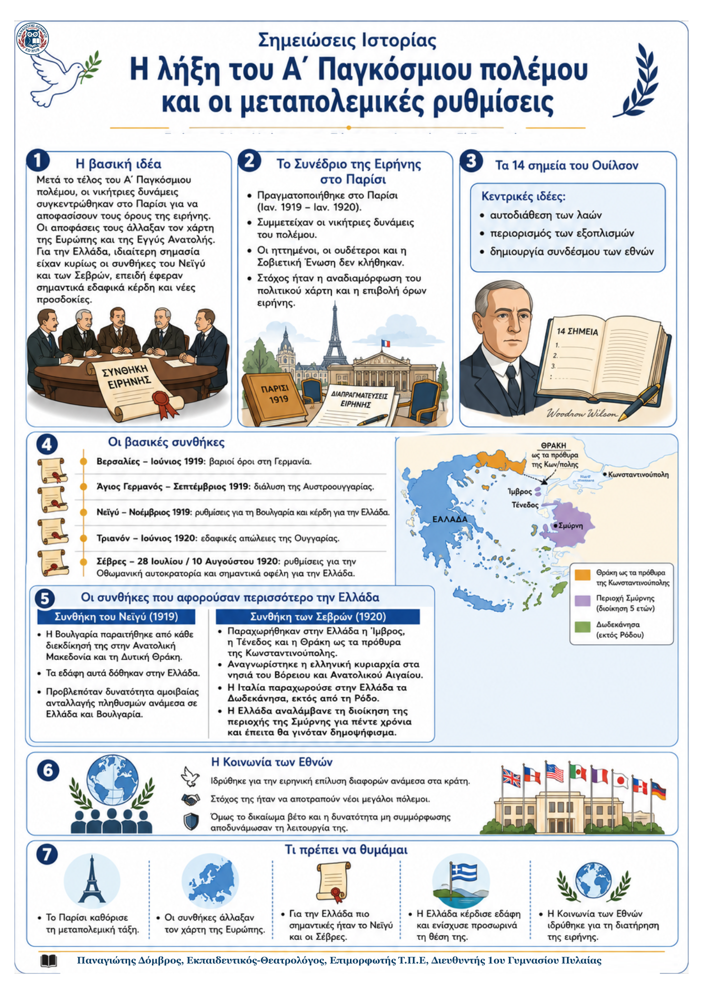

Δεν βρέθηκε η λέξη ή η φράση μέσα στην ενότητα.
1Η βασική ιδέα
Μετά τη νίκη της Αντάντ, οι νικήτριες δυνάμεις συγκεντρώθηκαν στο Παρίσι (1919–1920) και επέβαλαν στους ηττημένους τις συνθήκες ειρήνης. Οι ρυθμίσεις άλλαξαν τον χάρτη της Ευρώπης και δημιούργησαν νέα κράτη. Για την Ελλάδα, καθοριστικές ήταν κυρίως οι συνθήκες του Νεϊγύ και των Σεβρών, επειδή προέβλεπαν σημαντικές εδαφικές παραχωρήσεις.
2Το συνέδριο του Παρισιού και οι βασικές αρχές
Οι ηττημένοι, οι ουδέτεροι και η Σοβιετική Ένωση δεν συμμετείχαν στις αποφάσεις.
Η Γαλλία επιδίωκε να εξασθενήσει τη Γερμανία, ενώ οι νικητές ήθελαν να περιορίσουν το νέο σοβιετικό καθεστώς.
Η αρχή της αυτοδιάθεσης των λαών, βασικό σημείο του προέδρου Ουίλσον, αναγνώριζε σε κάθε λαό το δικαίωμα να αποφασίζει για το μέλλον του.
3Οι συνθήκες που αφορούσαν άμεσα την Ελλάδα
| Συνθήκη | Τι προέβλεπε για την Ελλάδα | Σημασία |
|---|---|---|
| Νεϊγύ Νοέμβριος 1919 |
Η Βουλγαρία παραιτήθηκε από κάθε διεκδίκηση στην Ανατολική Μακεδονία και τη Δυτική Θράκη. Τα εδάφη αυτά δόθηκαν στην Ελλάδα. Προβλέφθηκε επίσης δυνατότητα αμοιβαίας ανταλλαγής πληθυσμών Ελλάδας–Βουλγαρίας. | Η Ελλάδα κέρδισε εδάφη σε βάρος της Βουλγαρίας και ενίσχυσε τη θέση της στη Μακεδονία και τη Θράκη. |
| Σεβρών 28 Ιουλ./10 Αυγ. 1920 |
Παραχωρήθηκαν στην Ελλάδα η Ίμβρος, η Τένεδος και η Θράκη έως τα πρόθυρα της Κωνσταντινούπολης. Αναγνωρίστηκε η ελληνική κυριαρχία στα νησιά του Βόρειου και Ανατολικού Αιγαίου. Η Ιταλία παραχωρούσε τα Δωδεκάνησα, εκτός από τη Ρόδο. Η Ελλάδα αναλάμβανε για πέντε χρόνια τη διοίκηση της Σμύρνης, πριν από δημοψήφισμα. | Η Ελλάδα έφτασε στη μεγαλύτερη εδαφική της έκταση και πλησίασε την πραγματοποίηση της Μεγάλης Ιδέας. |
Οι υπόλοιπες βασικές συνθήκες
Βερσαλιών (1919): βαρείς όροι, αποζημιώσεις και αφοπλισμός της Γερμανίας.
Αγίου Γερμανού (1919): διάλυση της Αυστροουγγαρίας και αναγνώριση νέων κρατών.
Τριανόν (1920): η Ουγγαρία παραχώρησε εδάφη σε γειτονικά κράτη.
Η Κοινωνία των Εθνών
Δημιουργήθηκε για να λύνει ειρηνικά τις διαφορές ανάμεσα στα κράτη. Όμως, το δικαίωμα βέτο και η δυνατότητα των μελών να αγνοούν τις υποδείξεις της την αποδυνάμωσαν.
4Τι πρέπει να θυμάμαι
Η Ελλάδα κέρδισε εδάφη και από τη Βουλγαρία και από την Οθωμανική αυτοκρατορία. Η συνθήκη του Νεϊγύ της έδωσε τη Δυτική Θράκη, ενώ η συνθήκη των Σεβρών προέβλεψε ακόμη μεγαλύτερη επέκταση σε Θράκη, Αιγαίο και Σμύρνη. Οι μεταπολεμικές ρυθμίσεις, όμως, δεν εξασφάλισαν μόνιμη ειρήνη.
